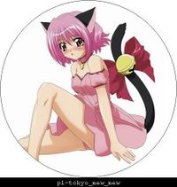
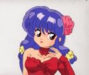

De: La Frikipedia, la enciclopedia extremadamente seria.
De: La Frikipedia, la enciclopedia extremadamente seria. De: La Frikipedia, la enciclopedia extremadamente seria.
| De la serie monstruos mitológicos: | |||
| Catgirl | |||
| |||
| Nombre Científico | Femalis nekomatus | ||
| Hábitat | | ||
| Organización | Depende | ||
| Actividad | Perseguir, juguetear a todo (Y todo es todo) | ||
| Dieta | ¡Ama la Carne! | ||
| Inteligencia | La de un gato | ||
| Aparición | Actualmente, en muchas partes | ||
| Número aproximado | | ||
| Armadura | No está relacionado ¿O sí? | ||
| Ataques | Garras, mordiscos en el | ||
| Moral | Alta | ||
| Notas | ¿Quién no ama tanto la carne? | ||
Catgirl es un término del engrish que significa a una mujer buenaza con apariencias de gato, tales como sus orejas, cola, entre otros. Se les suele a llamar Neko (猫, literalmente gato) o Nekomimi (猫耳, orejas de gato); se encuentran en actividades cosplay, en videojuegos y universos online. Es el resultado zoofílico entre un humano y un gato.
Una de las máximas exponentes es Gatúbela, tuvo una película sobre su honor y donde actúa más como heroína que villana. Al final, termina bien y más tarde, se vuelve enemiga de Batman por causas desconocidas.
Esta parte indica el origen exacto de las catgirls.
Los shintos cuentan que existe una bestia sexual de nombre Bakeneko (化け猫), que significa un espíritu de gato con poderes sobrenaturales junto con sus amigos de noche el kitsune (zorro) y el tanuki (perro mapache).
Hay rumores sobre ellos que los japos antiguos deben cortar las colas para evitar que los gatos sean transformados en monstruos con una sed ampliamente sexual (Ésto creó el Bobtail japonés). También se descubre a un bakeneko si un gato toma ácidos beben aceite para lámpara, confundiéndolo con aceite de pescado (Causa de beber el aceite).
Para ser un bakeneko, un gato tiene que:
Una vez cumplidas, el bakeneko obtiene poderes paranormales. Estos poderes son usados para joder a huéspedes. También pueden:
Han existido leyendas sobre ellos tanto maléfico como benevolente. En 1602, el gobierno japonés liberó a los gatos para irse de putas (como Kimi Raikkonen) y cazar ratones.
El tipo de Ran Ran Ru, es decir, Ronald McDonald decidió ir a Japón para buscar más ingredientes malévolos, en esta vez, él añadió una nueva receta: el McFurry. Greenpeace estuvo cabreado porque el McFurry contenía catgirls en él y decidieron aliarse para derrotar al payaso, una vez más. Luego de protestas violentas, lograron quitar el catgirl del McFurry, pero ésto causó la superpoblación de la catgirl.
| Foto de archivo | Nombre | Descripción | Tipo |
|---|---|---|---|
| 200px | Blair | Es la ninfómana buenaza de la serie. Cuando no es una calientapollas, se transforma en un gato negro. Su magia son las calabazas y on ellas puede hacer de todo. Planea robarse a Soul, en un episodio, Soul tuvo hemorragia nasal cuando la vio por primera vez. | Verdadera catgirl |
|  | Ichigo Momomiya | Tiene 13 años, pero para evitar el lolicon le pusieron 16. Tiene el gen de la Pantera Rosa, lo cual ha adquirido hábitos de un felino. | Verdadera catgirl, puede transformarse |
| Shizuka Nekonome | Es la principal profesora de la serie y no arma ningún embolado por culpa de los alumnos. Es la jefa de prensa y le gusta el pescado (¿Quién no?) | Nekomusume | |
|  | Shampoo | Su nombre verdadero es "Head and Shoulders" debido a que es de Gondwana. Es la esclava de Ranma, ya que lo deja sedoso, brillante y es anticaspa | Puede transformarse (mezcle Shampoo con hagua fría y resulta una gata pervertida) |
| Azusa Nakano o Azu- |
Se unió al grupo luego de que va bastante bien con la guitarra, es la más loli de todas y planea dominar el mundo con sus canciones para lavarles el cerebro a los otakus. Se vuelve tsundere pero con una torta y yuri con Yui, se relaja. | Farsante | |

|
Himari Noihara | Estudiante de intercambio que fue atrapada por un ancestro de Yuto y ahora es la sirviente. Quiere violar a su amo y quitarse la virginidad luego de que a este lo besara Kuesu. Su arma es la katana yasutsuna (安綱), se convierte en una gata blanca cuando está cabreada y sólamente con violar a Yuto se relaja. | Verdadera catgirl, además es una bakeneko |
| | |||
|---|---|---|---|
|
Clásicos
Esos que tus padres te decían para que te comieras las verduras
Tus peores pesadillas
|
Autor(es):